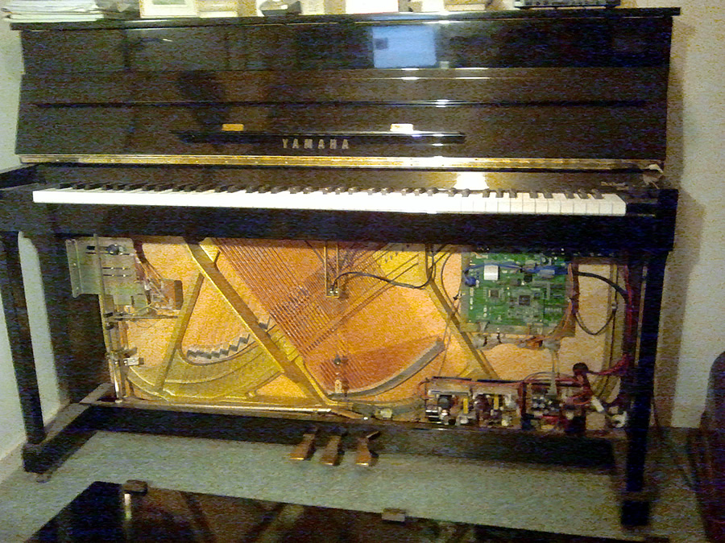
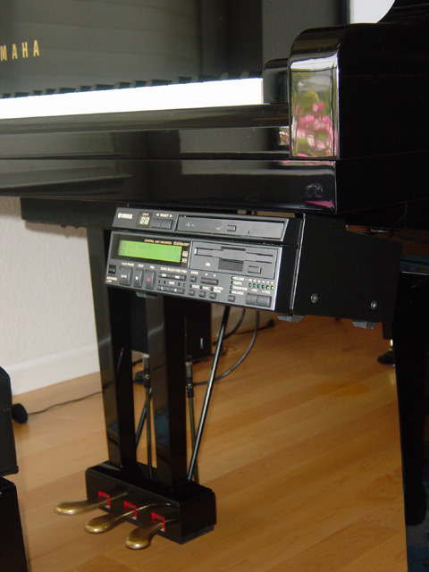

Yamaha Disklavier
A real acoustic piano that records your touch to a floppy disk, then plays it back by physically moving the keys

Overview
The Yamaha Disklavier, introduced in the United States in 1987 with the studio upright MX100A, is a real acoustic piano fitted with an electronic recording and playback system. Sensors attached to the keys, hammers, and pedals record a performance and store it on a 3.5-inch double-density floppy disk in Yamaha's E-SEQ format, a forerunner of the Standard MIDI File. On playback, electromechanical solenoids move the keys and pedals of the same acoustic instrument, reproducing the original performance with its actual hammer strikes — no speakers, no samples, just the piano itself playing.
Yamaha's earlier 'Piano Player' upright of 1982 and the Japan-market MX100R of 1985 pioneered the record-and-playback floppy-disk system, but the 1987 US-launch MX100A (identified by its red LED display; later models switched to green) made it a mass-market product. The Bösendorfer SE of 1984-1987, built by Wayne Stahnke at around $100,000 for a handful of buyers, had demonstrated studio-grade capture; Yamaha's contribution was to make the reproducing piano a factory option. The Disklavier has since become a standard tool in music education and performance, used by conservatories, composers, and competition organizers.
Its strangest use is as a self-playing instrument with a ghost inside. In 1989 Jean-Claude Risset composed Duet For One Pianist, in which the pianist's notes are processed by an algorithm and sent back to the same piano in real time — the machine answers the performer. Later work by Kyle Gann, Dan Tepfer, and others treats the Disklavier as a composing partner. The Smithsonian's National Museum of American History holds a Disklavier PRO 2000 concept piano.
Deep dive
The core interaction is a capture-and-replay loop through a real acoustic mechanism. Fiber-optic sensors measure the movement of keys, hammers, and pedals during a performance; the data is written to a 3.5-inch floppy in E-SEQ format, the proprietary precursor of Standard MIDI Files. On playback, solenoids physically push the keys and pedals, so the piano's own hammers strike its own strings. Early models recorded hammer velocity; later PRO models captured key-up velocity and sub-MIDI-resolution touch, because normal MIDI's 0-127 velocity range could not express a pianist's full dynamic range.
The Disklavier's defining cultural moment came in 1989, when Jean-Claude Risset wrote Duet For One Pianist at the Laboratoire de mécanique et d'acoustique in Marseille. The pianist's notes are algorithmically transformed — mirrored, delayed, arpeggiated — and sent back to the same piano in real time, so the performer duets with a machine that is literally the same instrument being played by the ghost of their own hands. Risset and Simon Bolzinger built the DKompose library for Max/MSP around this idea. Later composers like Kyle Gann (three Disklaviers tuned to microtonal intervals) and Dan Tepfer (Natural Machines) explored the same 'the piano answers you' paradigm.
The Disklavier descends from the pneumatic player piano — the 19th-century instrument that played itself from punched paper rolls — rebuilt with digital sensors and solenoids. Yamaha's later experiments connected Disklaviers over the Internet: in 1997 Ryuichi Sakamoto transmitted a performance to thousands of locations, and the Minnesota International Piano-e-Competition used synchronized Disklavier PROs on two continents so a jury member in Japan could experience a pianist playing live in St. Paul. The mechanical delay between MIDI data and audible hammer strike is about a quarter of a second — a physical latency built into the interface itself.
Team & pioneers
- Yamaha Corporation. Manufacturer; introduced the Disklavier in the US in 1987 (MX100A).
- Jean-Claude Risset. Composer; wrote Duet For One Pianist (1989) for live algorithmic interaction with the Disklavier.
- Simon Bolzinger. Pianist and researcher; co-developed the DKompose Max/MSP library for interactive Disklavier composition.
- Wayne Stahnke. Builder of the Bösendorfer SE (1984-87), the studio-grade reproducing piano that preceded the mass-market Disklavier.
Media


Sources
- Wikipedia — Disklavier
- Yamaha — History of the Disklavier (Litterst)
- Smithsonian NMAH — Disklavier PRO 2000 (nmah_1190516)
- Bolzinger, S. — DKompose: A Package for Interactive Composition in the Max Environment Adapted to the Acoustic MIDI Disklavier Piano (ICMC 1992)
- Los Angeles Times — Innovative Grand Piano Could Tune Up a Flat Industry (Apr 27 1993)